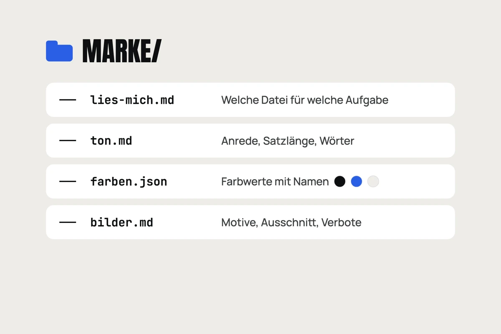
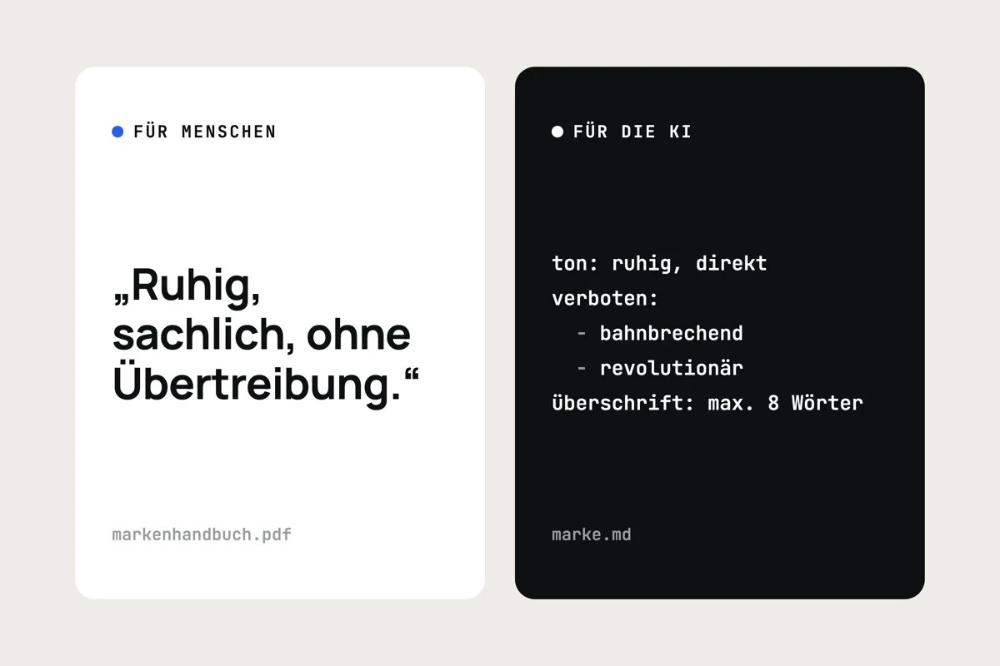

Agentische Markensysteme:
Warum hat das Marken-PDF ausgedient?
Mehr als die Hälfte der Unternehmen in Deutschland setzt inzwischen KI ein.1 Ein Markenhandbuch als PDF kann eine KI aber nicht zuverlässig anwenden. Agentische Markensysteme sind die Antwort darauf, und sie sind noch ganz neu: Bei meiner Recherche habe ich in Deutschland kein festes Angebot dafür gefunden, und auch mein eigenes Angebot ist noch in der Entwicklung. Hier steht, was ein agentisches Markensystem ist, was hineingehört und wie ein Unternehmen im Mittelstand damit anfängt.

- Ein agentisches Markensystem ist ein Paket aus Dateien, das Menschen lesen und KI-Agenten auslesen können: Regeln für Ton, Wörter, Farben, Schrift, Bildsprache und Layout, jeweils mit Begründung.2
- Ein Marken-PDF zeigt Entscheidungen für Seiten, die schon gestaltet sind. Was auf einer neuen Seite gilt, sagt es nicht. Genau dort rät eine KI und landet beim Austauschbaren.2
- Eine KI braucht genaue, messbare Regeln: Farbwerte als Hex-Code statt einer Beschreibung, verbotene Wörter, Längen für Überschriften.3
- 57 Prozent der Unternehmen in Deutschland ab 20 Beschäftigten setzen KI ein, ein Jahr zuvor waren es 36 Prozent.1
- Für den Anfang reicht eine einzige Markdown-Datei mit den wichtigsten Regeln, getestet an echten Aufgaben aus dem Alltag.
Warum reicht ein Marken-PDF nicht mehr?
Ein Markenhandbuch (Brand Manual) wurde für Menschen geschrieben. Es zeigt Logo, Farben, Schriften und ein paar fertige Beispielseiten. Wer lange im Unternehmen ist, füllt die Lücken aus Erfahrung.
Eine KI hat diese Erfahrung nicht. Little Plains, ein Studio für Marken und digitale Produkte aus New York, das vor allem Start-ups begleitet,4 beschreibt das an einem Beispiel: Das Handbuch zeigt eine Startseite mit grünem Akzent. Ob Grün auf einen Button, in eine Warnung oder nirgendwohin gehört, sagt es nicht. Ein Mensch kann nachfragen, muss aber oft selbst entscheiden. Eine KI rät deutlich häufiger, und jede geratene Entscheidung rückt das Ergebnis näher an ein austauschbares Produkt.2 Es sieht ordentlich aus, aber nicht nach dir.
Dazu kommt das Tempo. Meiner Erfahrung nach entsteht eine Stellenanzeige mit Grafik heute in wenigen Minuten. Little Plains schreibt, dass ein Unternehmen heute in einem Monat mehr kleine Entscheidungen über seine Marke treffen kann als früher in einem Jahr.2 Der Anbieter Frontify schreibt, dass PDF-Handbücher nie dafür gebaut wurden, einer KI ihre Regeln geordnet zu liefern.5
Was ist ein agentisches Markensystem?
Ein agentisches Markensystem (Agentic Brand System) ist eine Sammlung aus Text-, Daten- und Codedateien. Menschen können darin blättern, KI-Agenten lesen dieselben Dateien aus.2

Der Unterschied zum PDF: Jede Regel nennt ihren Grund und sagt, wo sie gilt und wo nicht. Damit kann auch jemand eine gute Entscheidung treffen, der eine Seite baut, die noch niemand gezeichnet hat.2
Little Plains liefert so ein Paket inzwischen bei jedem Projekt mit.2
Was gehört hinein?
| Teil | Was drinsteht | Beispiel |
|---|---|---|
| Lese-Anleitung | Welche Datei für welche Aufgabe | „Für Stellenanzeigen: Ton, Wörter, Vorlage Stellenanzeige“ |
| Ton und Wörter | Anrede, Satzlänge, bevorzugte und verbotene Wörter | „Wir siezen. Nicht ‚innovativ‘.“ |
| Farben und Schrift | Genaue Werte und wofür sie da sind | „Bordeaux #5B1A2B für Flächen, nie für Text“ |
| Bildsprache | Motive, Ausschnitt, was nie vorkommt | „Echte Menschen bei der Arbeit, keine Stockfotos mit Headset“ |
| Layout und Vorlagen | Reihenfolge, Abstände, feste Bausteine | „Logo unten links, nie zentriert“ |
| Begründungen | Warum eine Regel gilt | „Kupfer nur als Akzent, weil es das Material des Betriebs ist“ |
Für Farben, Schriftgrößen und Abstände gibt es ein gemeinsames Format: Design Tokens. Design Tokens sind die Werte eines Designs mit festem Namen, zum Beispiel „Hauptfarbe = #5B1A2B“, gespeichert so, dass Website, Präsentation und KI dieselbe Zahl verwenden. Die Design Tokens Community Group beim W3C hat es am 28. Oktober 2025 erstmals in einer stabilen Fassung veröffentlicht; ein offizieller W3C-Standard ist es nicht.6 Google stellt mit DESIGN.md eine frei nutzbare Vorlage für solche Dateien bereit, noch in einer frühen Testphase.7 Sie verbindet genaue Werte mit Begründungen in normalen Sätzen: Die Werte sagen der KI, welches Blau gemeint ist, die Sätze sagen ihr, wann und warum sie es einsetzt.7
Wie klingt eine Regel für Menschen, wie für die KI?
Für Menschen darf eine Regel ein Gefühl beschreiben. Für die KI muss sie messbar sein. Die Markenberatung Monigle zeigt den Unterschied an einem Beispiel, hier sinngemäß übersetzt:3

Wie prüft man, ob das System hält?
Ich teste jedes Paket, bevor ich es übergebe: Ein frischer KI-Agent ohne Vorwissen baut daraus etwas Neues, zum Beispiel eine Stellenanzeige oder eine Folie. Jede falsche Entscheidung zeigt eine Lücke, die ich ins Paket nachtrage. So arbeitet auch Little Plains.2
Die Agentur Focus Lab geht ähnlich vor. Sie lässt die Dateien gegen echte Anfragen laufen und passt sie je Sprachmodell an, weil Claude, ChatGPT und andere Anweisungen unterschiedlich lesen.8
Wer pflegt das System?
Ein Markensystem veraltet, wenn sich das Unternehmen ändert oder neue Werkzeuge dazukommen. Für Little Plains ist genau das die offene Frage: Wer entscheidet über eine Änderung, wenn das Unternehmen, eine weitere Agentur und ein KI-Agent sie gleichzeitig vorschlagen?2 Focus Lab testet die Dateien deshalb weiter, wenn sich die Sprachmodelle ändern.8
Meine Empfehlung: Eine Person im Unternehmen ist für das System verantwortlich. Jede Änderung steht mit Datum und Grund in der Datei. Auf Wunsch übernehme ich die Pflege: Ich passe die Dateien an, wenn sich dein Unternehmen ändert oder ein neues KI-Modell kommt, und teste sie erneut. Bei STUDIO AAH! gibt es dafür die Regelwerk-Pflege ab 140 € netto im Monat.
Wie fängt ein Unternehmen im Mittelstand an?
Ein kleines Unternehmen braucht kein Paket mit React-Komponenten. Meiner Meinung nach reicht für den Anfang eine einzige Datei:
- Bestand sichten: Logo, Farben, Schriften, Vorlagen und zehn Texte, die das Unternehmen gut findet.
- Eine Markdown-Datei schreiben: Ton, Wörter, Farben mit Werten, Schrift, Layout für die drei häufigsten Aufgaben.
- In das KI-Werkzeug des Teams legen (je nach Tarif): in ChatGPT als Anweisung eines eigenen GPTs oder Projekts, in Claude als Projekt-Anweisung oder Skill, in Gemini als Gem.
- Mit fünf echten Aufgaben testen, mit und ohne Datei, und nachschärfen.
- Eine verantwortliche Person benennen.
Fazit
Das Marken-PDF bleibt für Menschen nützlich. Für die KI reicht es nicht. Wer mit KI gestaltet, braucht seine Marke ein zweites Mal: genau, messbar und mit Begründung. Der Anfang ist eine Datei, kein Großprojekt.
Ehrliche Antworten
Was ist ein agentisches Markensystem?
Ein agentisches Markensystem ist ein Paket aus Text-, Daten- und Codedateien, das Menschen lesen und KI-Agenten auslesen können. Es enthält die Regeln einer Marke für Ton, Wörter, Farben, Schrift, Bildsprache und Layout, jeweils mit Begründung. Die Agentur Little Plains beschreibt es als gemeinsame Quelle für Menschen und Agenten.
Was ist der Unterschied zwischen einem Markenhandbuch und einem agentischen Markensystem?
Ein Markenhandbuch zeigt Entscheidungen für bereits gestaltete Seiten, meist als PDF für Menschen. Ein agentisches Markensystem beschreibt laut der Agentur Little Plains die Regeln dahinter so genau, dass auch eine KI sie auf neue Seiten anwenden kann. Beide ergänzen sich: das Handbuch zum Verstehen, das System zum Machen.
Braucht ein kleines Unternehmen ein agentisches Markensystem?
Meiner Meinung nach braucht ein kleines Unternehmen kein großes System, aber eine Markendatei für die KI lohnt sich, sobald das Team mit KI schreibt oder gestaltet. Eine einzige Markdown-Datei mit Ton, Wörtern, Farben und Schrift reicht für den Anfang. Wichtig ist, sie an echten Aufgaben zu testen.
Was ist eine Markdown-Datei?
Eine Markdown-Datei ist eine einfache Textdatei mit der Endung .md, in der Überschriften und Listen mit wenigen Zeichen markiert sind. Menschen können sie ohne besonderes Programm lesen, KI-Werkzeuge lesen Überschriften und Listen darin als Gliederung. Die Agentur Little Plains und Google mit DESIGN.md setzen für Anweisungen an KI-Agenten Markdown-Dateien ein.
In welchen KI-Werkzeugen lässt sich eine Markendatei hinterlegen?
Eine Markendatei lässt sich in jedem KI-Werkzeug hinterlegen, das eigene Anweisungen oder Dateien erlaubt. Je nach Tarif geht das in ChatGPT in einem eigenen GPT oder Projekt, in Claude als Projekt-Anweisung oder Skill und in Gemini als Gem.
Was sind Design Tokens?
Design Tokens sind die Werte eines Designs, etwa Farben, Schriftgrößen und Abstände, gespeichert in einem festen Datenformat. Aus ihnen entstehen zum Beispiel das CSS einer Website oder die Farben in Figma. Die Design Tokens Community Group beim W3C hat das Format am 28. Oktober 2025 erstmals in einer stabilen Fassung veröffentlicht, als Empfehlung der Gruppe und nicht als offiziellen W3C-Standard.
Wer pflegt ein agentisches Markensystem?
Ein agentisches Markensystem braucht eine verantwortliche Person im Unternehmen, die Änderungen freigibt und mit Datum und Grund festhält. Laut der Agentur Little Plains ist offen, wer über Änderungen entscheidet, wenn mehrere Beteiligte sie vorschlagen. Die Agentur Focus Lab testet die Dateien erneut, wenn sich die Sprachmodelle ändern.
Was kostet ein Marken-Regelwerk mit KI-Markenanweisung bei STUDIO AAH!?
Ein Marken-Regelwerk mit KI-Markenanweisung kostet bei STUDIO AAH! ab 1.450 € netto im Paket Start und ab 2.650 € netto im Paket Team. Den genauen Festpreis nennt Anna Härtelt nach dem kostenlosen Erstgespräch, das 30 Minuten dauert und online stattfindet.
Soll deine KI deine Marke kennen?
Im kostenlosen Erstgespräch (30 Minuten, online) sehen wir uns an, was dein Team heute mit KI gestaltet und was eine Markendatei dafür leisten kann.

Anna Härtelt
Gründerin von STUDIO AAH! in Leipzig. UX/UI-Designerin, Strategin und Webentwicklerin, seit 2020 selbstständig, mehr als 40 Projekte – von der Website für Selbstständige bis zum Redesign für mittelständische Unternehmen.
Quellen
- Bitkom: Erstmals nutzt die Mehrheit der Unternehmen KI, Presseinformation, 14.09.2026
- Little Plains: Agentic Systems Are the Future of Brands, abgerufen am 18.11.2026
- Monigle: The blueprint for converting brand guidelines into AI-ready systems, abgerufen am 18.11.2026
- Little Plains: Website des Studios, abgerufen am 18.11.2026
- Frontify: Machine-readable brand guidelines: From brand.md to an AI-ready brand system (Ratgeber des Anbieters), abgerufen am 18.11.2026
- Design Tokens Community Group (W3C): Design Tokens Format Module 2025.10, 28.10.2025
- Google Labs: DESIGN.md, abgerufen am 18.11.2026
- Focus Lab: AI Activation (Leistungsseite der Agentur), abgerufen am 18.11.2026